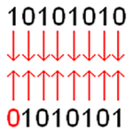
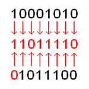
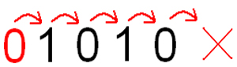
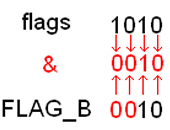

Si vous avez lu le tutoriel sur le C/C++ de M@teo21 jusqu'à la partie III sur la SDL, vous avez probablement rencontré ces paramètres étranges que l'on utilise pour initier la SDL nommés "flags" sans trop savoir ce qu'ils sont en réalité. Vous vous êtes sans doute déjà posé la question : "Mais comment diable fonctionnent les flags ? ".
Peut-être aussi n'avez-vous tout simplement jamais entendu parler de flags auparavant et vous aimeriez savoir ce que c'est. Et bien c'est justement ce que ce tuto va expliquer.
Voilà une bonne question. Il s'agit de paramètres que l'on peut passer comme bon nous semble à une fonction. Ils servent généralement à spécifier qu'on veut qu'une fonction agisse de telle ou telle manière sans toutefois être obligé de lui passer des tas de paramètres. On sépare des flags par des barres verticales (|).
Prenons par exemple la fonction SDL_Init() qui permet d'initialiser la SDL. Cette fonction ne prend que des flags en paramètre et pour chacun, une section de la SDL est initialisée. Notez que les flags ne sont pas propres à la SDL, mais elle nous servira de bon exemple.
//...
SDL_Init(SDL_INIT_VIDEO | SDL_INIT_AUDIO | SDL_INIT_CDROM);
//Ici, les modules vidéo, audio et cd-rom seraient initialisés.
Les 3 constantes SDL_INIT_VIDEO, SDL_INIT_AUDIO et SDL_INIT_CDROM auraient pu être passées dans n'importe quel ordre ou, tout simplement, ne pas être passées en paramètre et cela n'aurait posé aucun problème. Il en aurait tout de même fallu au moins une parmi toutes celles offertes, sinon la SDL n'aurait pas été initialisée.
Mais... comment se fait-il que des paramètres soient facultatifs, ce n'est pas permis qu'en C++ ?
C'est vrai, on ne peut pas donner de valeur par défaut à des paramètres en C. Mais les flags ne sont pas des paramètres avec des valeurs par défaut. Ce n'est qu'un seul et unique paramètre. Jetez un oeil sur le prototype de SDL_Init().
int SDL_Init(Uint32 flags);
Surprenant n'est-ce pas ? Cela nous amène donc à nous demander ce que sont réellement ces barres qui délimitent les flags. C'est ce que nous allons voir.
Voilà qu'on entre dans le coeur du sujet : les opérateurs bit à bit (bitwise en anglais). Ces opérateurs sont en fait : "^", "&" et "|". Eh oui ! Le symbole & est de nouveau utilisé, il a donc 3 fonctionnalités : donner l'adresse d'une variable, identifier les références et celle que nous allons voir.
Si nos trois nouveaux copains sont des opérateurs au même titre que le signe d'addition (+) et de soustraction (-), il est possible de leur faire faire des calculs. Vous savez ce que donne (38 | 22) ? La réponse est 54. Quoi ? Vous ne voyez pas le lien ? o_O C'est normal ! ^^
En fait, ces trois symboles sont des opérateurs qui permettent de faire du calcul au niveau des bits d'une variable. Ils vont comparer chacun des bits de deux nombres binaire et renvoyer le bit en fonction de l'opérateur utilisé (Un ordinateur ne connaît que le binaire, alors pour lui (38 | 22), c'est (100110 | 10110)).
Voici ce que font chacun des opérateurs :
& veut dire ET (comme pour && dans une condition).
| est un OUinclusif, ce qui veut dire que ça peut être un ou l'autre ou les deux (comme pour || dans une condition).
^ est un OUexclusif, ce qui veut dire que ça peut être un ou l'autre mais pas les deux.
Le principe de leur fonctionnement est le même que les conditions, les opérateurs testent si la valeur vaut 1. Laissons les exemples parler d'eux-mêmes.
0|0 = 0
1|0 = 1
1|1 = 1
0&0 = 0
1&0 = 0
1&1 = 1
0^0 = 0
1^0 = 1
1^1 = 0
Maintenant, prenons deux valeurs hexadécimales : 0xAA et 0x55 qui, en binaire, deviennent respectivement 10101010 et 01010101. Si nous appliquons ce principe sur ces nombres binaires qui contiennent plusieurs bits, le nombre renvoyé sera comparé ainsi.

Donc, si on écrit (0xAA | 0x55), le nombre renvoyé sera 0xFF (ou 255) puisque c'est l'équivalent de 11111111 en binaire. (0xAA & 0x55) vaudra 0 (qui est la même chose que 00000000). Pas si difficile hein ?
Pour corser les choses, prenons 2 nombres au hasard et testons les. Disons 138 et 92. 138 = 10001010 92 = 1011100 Pour calculer (138 | 92), on fait comme ceci :

Le nombre binaire qui en résulte est 11011110 qui vaut 222 en décimal. Nous pouvons donc affirmer que (138 | 92) = 222. Voyons avec les 2 autres opérateurs.
Et maintenant, l'intérêt avec les flags ? Mais tout, voyons ! C'est ce que nous verrons plus bas, mais avant, une petite parenthèse sur deux autres opérateurs.
Les opérateurs de décalage (<< et >>).
Les opérateurs de décalage sont, eux aussi, des opérateurs bit à bit, mais leur fonctionnement est bien différent. Ils ont pour effet de décaler de n position chacun des chiffres d'un nombre binaire dans un certain sens.
<< décale les chiffres vers la gauche. décale les chiffres vers la gauche.
>> décale les chiffres vers la droite. décale les chiffres vers la droite.
Lors d'un décalage vers la gauche, des 0 sont insérés à la droite du nombre. Lors d'un décalage vers la droite, les chiffres qui sortent du nombre à droite sont perdus et des 0 sont insérés à gauche. Pour faire un décalage de 1 chiffre vers la droite du nombre 10, on doit écrire (10 >> 1) qui est l'équivalent de (1010 >> 1). Voici un dessin qui représente l'opération.

Le nombre renvoyé ici est 5 (101). Un décalage vers la gauche de 1 (10 << 1 ) aurait donné 20 (10100). On peut constater qu'un décalage vers la gauche multiplie un nombre par 2n et un décalage vers la droite divise un nombre par 2n.
Eh oui ! Ça ne pouvait pas être aussi simple ! Une variable a toujours une limite en taille. Un unsigned char, par exemple, est écrit sur 8 bits. Si on y stocke un nombre et qu'on le décale vers la gauche, les bits de poids fort (à gauche) seront PERDUS s'ils sortent du nombre.
Si on attribue la valeur 128 (10000000) à une variable de type unsigned char (8 bits non-signés). Un décalage de 1 chiffre vers la gauche de cette variable donnera 0 (00000000).
Ça devient encore plus compliqué si on décale une variable de type signé. Il faut tenir compte du premier bit qui détermine le signe du nombre. Si on attribue la valeur 127 (1111111) à une variable de type char (8 bit signés). Un décalage de 1 vers la gauche sera équivalent à -2 ou, en binaire, (1)1111110.
Mais encore ! Un décalage vers la droite n'affecte pas le bit qui détermine le signe d'un nombre, même s'il est stocké dans une variable signée. (-127 >> 1) = -64 = (1)1000000.
Il faut une bonne maîtrise du fonctionnement de la mémoire et du système binaire pour travailler les opérateurs de décalage, c'est pourquoi j'ai conseillé de lire ce tutoriel écrit par Sheirkus.
Et si on retournait à notre sujet ? C'est à dire les flags !
Maintenant que nous avons vu comment fonctionnent les opérateurs bit à bit (bitwise), il ne reste plus qu'à les utiliser pour passer des flags à une fonction.
Pour commencer, comme je l'ai mentionné au début du tuto, les flags sont des constantes. Il faut les définir avec des valeurs précises dans le header où le prototype de la fonction en question se trouve. Appelons cette fonction fonctionTest(). Donc, dans le header on fait comme ceci.
#ifndef DEF_FICHIER
#define DEF_FICHIER
#define NO_FLAG 0
//Lorsqu'on ne passe pas de flag en paramètre, on envoie 0. Je vais détailler plus loin.
#define FLAG_A (valeur)
#define FLAG_B (valeur)
#define FLAG_C (valeur)
//etc.
void fonctionTest(unsigned long flags);
#endif
Dans mon exemple, j'ai déclaré flags comme étant un unsigned long qui est un entier non-signé écrit sur 4 octets (32 bits). Il est important de déclarer le paramètre qui prend les flags comme étant un type non-signé. Un unsigned long, étant écrit sur 32 bits, permettra de stocker un maximum de 32 flags. Un unsigned short permetterait d'en stocker un maximum de 16. Un unsigned char, un maximum de 8, etc. À vous de voir quel type vous allez utiliser.
Et quelles valeurs on donne à nos flags ?
J'y arrivais justement. Il faut donner une valeur dont le nombre, une fois converti en binaire, ne contient qu'un seul 1. On peut donc les définir de cette manière :
1 = 0x1 = 1
2 = 0x2 = 10
4 = 0x4 = 100
8 = 0x8 = 1000
16 = 0x10 = 10000
32 = 0x20 = 100000
Vous pouvez choisir des valeurs selon la base de votre choix, j'utiliserai la base décimale pour mon exemple.
Et maintenant, attribuons nos valeurs à nos flags, ce qui nous donne notre header final.
Vous commencez à comprendre la technique ? En écrivant (FLAG_B | FLAG_D), on obtient l'équivalent de 1010 en binaire. 1010 équivaut à 10 en décimal, mais nous n'avons plus à nous préoccuper de cette valeur.
Dernier soucis, extraire les flags du nombre passé en paramètre. On le fait en comparant le nombre reçu (unsigned int flags) et le flag en question avec l'opérateur & tout simplement. Un autre dessin s'impose.

Lorsqu'un flag n'est pas passé en paramètre, la comparaison renvoie 0, tout simplement. Voilà !
On écrit donc dans le fichier source autant de conditions qu'on a de flags pour les tester tous. Chaque condition doit tester si la comparaison entre un flag et le paramètre de la fonction avec l'opérateur & renvoie une valeur différente de 0.
//Fichier test.c
#include "test.h"
void fonctionTest(unsigned int flags)
{
if (flags != 0)
{
if ((flags & FLAG_A) !=0 )
//On sait que FLAG_A est passé en paramètre.
if ((flags & FLAG_B) !=0 )
//On sait que FLAG_B est passé en paramètre.
if ((flags & FLAG_C) !=0 )
//On sait que FLAG_C est passé en paramètre.
if ((flags & FLAG_D) !=0 )
//On sait que FLAG_D est passé en paramètre.
}
else
//NO_FLAG est passé en paramètre avec aucun autre flag.
}
Il ne restera plus qu'à inclure votre header dans tous les fichiers utilisant votre fonction et ce sera possible de l'appeler ainsi :
//...
fonctionTest(FLAG_C | FLAG_A);
//...
En C++, on peut tout simplement ne donner aucun flag à la fonction en donnant la valeur 0 par défaut au paramètre "flags". Ça évite de s'encombrer d'un flag ayant la valeur 0.
void fonctionTest(unsigned int flags=0);
C'est tout.
Et voilà qui termine le tuto sur les flags. J'espère que vous avez apprécié, mais surtout : j'espère que vous avez compris. Je vous invite donc maintenant à jeter un oeil au fichier SDL.h et regarder la déclaration de la fonction SDL_Init(). Tous les flags y sont déclarés.